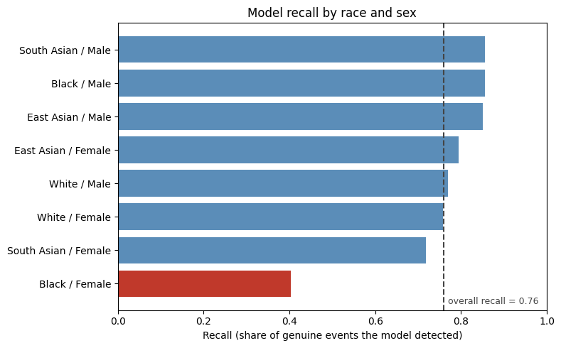

Fairness and Bias in Model Evaluation#
Content creators: Renee
Chapter Overview
A model can have strong overall accuracy while performing badly for specific groups of patients
Bias can be “invisible” when you evaluate one attribute at a time; some harms only appear at the intersection of attributes
Removing race and sex from a model’s inputs does not make the model fair
Improving representation in the training data reduces the gap, but rarely (if ever) closes it completely
Important - this data is simulated, not real
Every value in this module comes from a synthetic dataset that we generated. No real patients, cohorts, or health records are involved.
We deliberately built bias into these data for the purpose of demonstration only. This is a teaching device. It means:
None of the numbers here are epidemiological estimates. Do not quote the event rates, risk factors, or subgroup differences on this page as facts about cardiovascular disease in any real population.
The pattern we injected is a simplified caricature of a real phenomenon (described below). We chose it because it illustrates the method concisely.
The method is transferable, not the result. You can run the subgroup analysis, the fairness metrics, and the auditing workflow on real data. The specific gaps you see are ours by construction.
We chose to simulate rather than use a real cohort for two reasons: we have limited dataset access, and we wanted the ground-truth bias mechanism to be known so we could check whether our audit does, in fact, recover it.
Getting Started#
In 2019, researchers examined a commercial risk-prediction algorithm used across the United States to identify patients who should be enrolled in high-risk care management programs. The algorithm was applied to roughly 200 million people a year.
It was, by its own design metric, working well. It predicted its target accurately.
The problem was the target itself. The algorithm predicted future healthcare costs and used that as a stand-in for future health needs, assuming that higher expenditure = greater need. As a result of historically embedded biases, less money is consistently spent on Black patients than on White patients at an equal-need threshold. Thus, the algorithm concluded that Black patients needed less care in general (e.g., they were “healthier,” because they were correlated with lower expenditure) than White patients. In reality, the converse has historically been true: due to systemic racism in the medical industry, unequal access to care, institutional discrimination, biological myth-propagation, and underrepresentation in the provider pool (to name just a few causes), Black patients have been underdiagnosed and undertreated. These factors further lead to Black patients garnering higher levels of distrust in the medical system, making it more likely that they will avoid seeking care until symptoms become severe (i.e., until they are “sick enough” to justify the potential institutional mistreatment they may receive). This pattern of historical bias was reflected in this study as well: at any given risk score, Black patients were substantially sicker (e.g., in need of more significant care) than White patients. Correcting the bias would have more than doubled the proportion of Black patients automatically referred for extra care, therefore improving downstream treatment outcomes for Black patients [Obermeyer et al., 2019].
The algorithm did not account for this inequity, specifically, it did not use race as an input at all.
Clinical Question
For this chapter we will assess a cardiovascular risk model and ask:
Is our model biased against certain populations?
What are we trying to predict? Whether a patient experiences a cardiovascular event
What information do we have? Age, systolic blood pressure, cholesterol, BMI, smoking status
What do we need to check? Whether the model’s errors fall evenly across patient groups
Note: A single overall accuracy number cannot answer this question.
Setting Up#
The cell below loads the libraries used on this page. You do not need to read it to follow the chapter. It imports tools for handling tables (pandas), doing math (numpy), drawing charts (matplotlib), and building models (scikit-learn). Click to expand it if you want to see the details.
Show code cell content
"""
These are imports that help the rest of the code on this page run.
"""
%load_ext autoreload
%autoreload 2
from matplotlib import pyplot as plt
from myst_nb import glue
import numpy as np
import pandas as pd
from sklearn.linear_model import LogisticRegression
from sklearn.metrics import accuracy_score, recall_score, confusion_matrix
from sklearn.model_selection import train_test_split
from sklearn.pipeline import make_pipeline
from sklearn.preprocessing import StandardScaler
Building the simulated cohort#
The next cell creates our synthetic patient data. As flagged above, these are manufactured data with deliberately engineered bias. It is worth understanding what we built in, because the rest of the chapter is an attempt to discover it using only the tools an auditor would have.
We simulated two points of bias that have real-world observations:
Under-representation. Women make up 38% of our cohort and Black patients 10%, so Black women are only about 3.5% of the data. Cardiovascular research has a documented history of under-enrolling both women and Black participants, which means risk models are largely fitted to the patients who were most highly recruited.
A different risk mechanism in the under-represented group. For most of our simulated cohort, cardiovascular risk is driven strongly by cholesterol. For Black women in our simulation, risk is driven mainly by blood pressure and shows up at lower cholesterol levels. This is a deliberate exaggeration of a real observation: cardiovascular risk does not present identically across groups, and risk scores developed in one population can transfer poorly to another [Vyas et al., 2020].
The combination of these two points gives rise to harm. Taken together, the model encodes a cholesterol-driven rule from the patients it saw most (White men); this rule evidently does not describe the group it saw least (Black women).
Expand the cell to see the generating code.
Show code cell content
"""
This code generates the synthetic dataset described above.
The bias in this data is deliberate and engineered for teaching purposes.
This code section was written with the support of generative AI.
"""
# Set a random seed so this page produces the same numbers every time
rng = np.random.default_rng(21)
# Number of simulated patients
n = 8000
# --- Demographics -----------------------------------------------------
# These proportions reflect historic under-enrolment, not any real population.
race = rng.choice(["White", "Black", "South Asian", "East Asian"],
size=n, p=[0.70, 0.10, 0.11, 0.09])
sex = np.where(rng.random(n) < 0.38, "Female", "Male")
# --- Clinical features ------------------------------------------------
age = rng.normal(58, 12, n).clip(30, 90)
smoker = rng.binomial(1, 0.22, n)
systolic_bp = rng.normal(128, 16, n).clip(90, 200)
cholesterol = rng.normal(5.2, 1.0, n).clip(2.5, 9.0)
bmi = rng.normal(27.5, 4.5, n).clip(16, 50)
# --- The engineered difference ----------------------------------------
# Black women in this simulation have lower cholesterol and higher blood
# pressure than the cohort average.
is_bw = (race == "Black") & (sex == "Female")
cholesterol = np.where(is_bw, (cholesterol - 1.10).clip(2.5, 9.0), cholesterol)
systolic_bp = np.where(is_bw, (systolic_bp + 12).clip(90, 200), systolic_bp)
# Majority risk mechanism: cholesterol matters a lot.
logit_major = (-26.6
+ 0.14 * age
+ 0.055 * systolic_bp
+ 1.55 * cholesterol
+ 0.088 * bmi
+ 1.40 * smoker)
# Minority risk mechanism: blood pressure matters a lot, cholesterol barely.
logit_bw = (-29.6
+ 0.14 * age
+ 0.13 * systolic_bp
+ 0.15 * cholesterol
+ 0.088 * bmi
+ 1.40 * smoker)
logit = np.where(is_bw, logit_bw, logit_major)
probability = 1 / (1 + np.exp(-logit))
cvd_event = rng.binomial(1, probability)
# --- Assemble the table -----------------------------------------------
patients = pd.DataFrame({
"age": age.round(0).astype(int),
"sex": sex,
"race": race,
"systolic_bp": systolic_bp.round(0),
"cholesterol": cholesterol.round(1),
"bmi": bmi.round(1),
"smoker": smoker,
"cvd_event": cvd_event,
})
Looking at the Data#
Each row is one simulated patient. cvd_event is our label: 1 means the patient had a cardiovascular event, 0 means they did not.
# Show the first five patients
print(patients.head())
# How common is the outcome overall?
print("\nOutcome distribution:")
print(patients["cvd_event"].value_counts())
age sex race systolic_bp cholesterol bmi smoker cvd_event
0 38 Female Black 152.0 4.9 34.3 0 1
1 67 Female White 162.0 5.5 24.8 0 1
2 57 Female Black 131.0 5.3 31.2 0 0
3 61 Male White 145.0 6.4 24.5 0 1
4 49 Female White 107.0 4.3 26.7 0 0
Outcome distribution:
cvd_event
0 4584
1 3416
Name: count, dtype: int64
Before modelling anything, we want to explicitly ask ourselves: who is actually in this dataset?
# What share of the cohort does each race x sex group make up?
composition = (
patients.groupby(["race", "sex"]).size().rename("n").reset_index()
)
composition["percent_of_cohort"] = (100 * composition["n"] / len(patients)).round(1)
print(composition.sort_values("n", ascending=False).to_string(index=False))
race sex n percent_of_cohort
White Male 3471 43.4
White Female 2105 26.3
South Asian Male 562 7.0
Black Male 518 6.5
East Asian Male 453 5.7
South Asian Female 330 4.1
Black Female 282 3.5
East Asian Female 279 3.5
White men are roughly 43% of the cohort. Black women are roughly 3.5% (~280 patients out of 8000). Whatever the model learns, it will be learning it overwhelmingly from the groups at the top of this table.
Structuring This Problem
Input Features: age, systolic blood pressure, cholesterol, BMI, smoking status
Output Label:
cvd_event- 1 = experienced a cardiovascular event, 0 = did notAttributes we will audit against: race, sex
Notice that race and sex are not model inputs. The model never considers them. We are explicitly putting them aside to evaluate the model’s behaviour afterwards.
This is a deliberate choice, which communicates an implicit and common intuition: if the model cannot see race, it cannot discriminate on race. This (false) concept is called fairness through unawareness. We return to this concept later in the module.
Training the Model#
We split the data into a training set and a test set, then fit a logistic regression (i.e., the model architecture introduced in the machine learning fundamentals chapter). We first standardize the features so they are comparable.
FEATURES = ["age", "systolic_bp", "cholesterol", "bmi", "smoker"]
# Hold out 30% of patients to evaluate on
train_set, test_set = train_test_split(
patients, test_size=0.3, random_state=0, stratify=patients["cvd_event"]
)
# Standardize features, then fit logistic regression
model = make_pipeline(StandardScaler(), LogisticRegression(max_iter=1000))
model.fit(train_set[FEATURES], train_set["cvd_event"])
# Predict on the held-out patients
test_set = test_set.copy()
test_set["prediction"] = model.predict(test_set[FEATURES])
overall_accuracy = accuracy_score(test_set["cvd_event"], test_set["prediction"])
overall_recall = recall_score(test_set["cvd_event"], test_set["prediction"])
print(f"Overall accuracy: {overall_accuracy*100:.1f}%")
print(f"Overall recall: {overall_recall*100:.1f}%")
Overall accuracy: 80.6%
Overall recall: 75.9%
About 81% accuracy, and the model catches roughly 76% of the patients who go on to have an event. For a five-feature model on messy clinical data, this is a respectable result. At this point, on most project timelines, this model will get written up.
A note on metrics
Two values appear throughout this chapter:
Accuracy - of all predictions, what fraction were correct? This is the value most often reported; it also hides the most information.
Recall (also called sensitivity or the true positive rate) - of the patients who actually had an event, what fraction did the model correctly flag?
For a risk model that decides which patients receive extra clinical attention, recall is the number that matters most. A missed high-risk patient is a patient who does not receive care. Its supplement, the false negative rate, is simply 1 - recall.
Before We Audit: Two Causes to Consider#
Subgroup analysis produces tables of values that differ between groups. These differences have two distinct causes.
1. Different underlying rates of disease. Some groups experience cardiovascular events more often than others, for reasons including material deprivation, chronic stress, differential access to primary care, and environmental exposure. If group A has twice the event rate of group B, a well-calibrated model should assign group A higher risk scores on average. This is correct–not biased–model behaviour. We do not want to flatten these (real) differences.
2. Different model performance. This is a separate question: given that a patient will have an event, how likely is the model to catch it? If the model detects 80% of events in group B but only 40% in group A, that is a property of the model, not of the patient groups. The disease is equally prevalent in both groups; the model is, however, worse at spotting it in one of them.
The first is a fact about the world that a good model ought to reflect. The second is a defect in the model.
Why this distinction drives our metric choice
This difference describes why we emphasize recall rather than how many patients are flagged in each group. Recall conditions on patients who actually had an event, so it compares like cases with like cases. A group with a higher event rate should receive more flags: that is not evidence of bias. But every group’s actual events should be found at a similar rate, regardless of how common those events are.
When you see a gap in this chapter, it is a gap in detection among patients who were actually at risk.
Subgroup Analysis, One Attribute at a Time#
A standard audit will break performance down by each protected attribute. We can write a small helper chunk of code so we can reuse it.
def performance_by(data, group_columns):
"""Return per-subgroup performance for the columns given."""
rows = []
for group_value, subset in data.groupby(group_columns):
rows.append({
"group": " / ".join(group_value) if isinstance(group_value, tuple) else group_value,
"n_patients": len(subset),
"event_rate": round(subset["cvd_event"].mean(), 3),
"accuracy": round(accuracy_score(subset["cvd_event"], subset["prediction"]), 3),
"recall": round(recall_score(subset["cvd_event"], subset["prediction"], zero_division=0), 3),
})
result = pd.DataFrame(rows)
result["missed_rate"] = (1 - result["recall"]).round(3)
return result.sort_values("recall")
First, performance broken down by race:
print(performance_by(test_set, ["race"]).to_string(index=False))
group n_patients event_rate accuracy recall missed_rate
Black 248 0.528 0.758 0.641 0.359
White 1676 0.417 0.807 0.765 0.235
South Asian 256 0.395 0.840 0.802 0.198
East Asian 220 0.427 0.814 0.830 0.170
Then by sex:
print(performance_by(test_set, ["sex"]).to_string(index=False))
group n_patients event_rate accuracy recall missed_rate
Female 909 0.426 0.785 0.700 0.300
Male 1491 0.428 0.819 0.795 0.205
We see a non-dramatic, but noticeable, trend here. Recall for Black patients is around 0.64 against roughly 0.77 for White patients. Recall for women is around 0.70 against roughly 0.80 for men.
These are the kinds of gaps that are waved away in a pre-release meeting. Smaller sample, wider confidence interval, we can watch it in the next release. Both attributes look mildly imperfect and broadly acceptable.
This is a trap! We have checked race. We have checked sex. Every box on the standard fairness checklist is ticked. But have we checked race x sex? No! Let’s…
Subgroup Analysis at the Intersection#
Instead of grouping by race or sex, we group by race and sex together.
intersectional = performance_by(test_set, ["race", "sex"])
print(intersectional.to_string(index=False))
group n_patients event_rate accuracy recall missed_rate
Black / Female 95 0.653 0.600 0.403 0.597
South Asian / Female 94 0.415 0.798 0.718 0.282
White / Female 636 0.396 0.813 0.758 0.242
White / Male 1040 0.430 0.804 0.770 0.230
East Asian / Female 84 0.405 0.774 0.794 0.206
East Asian / Male 136 0.441 0.838 0.850 0.150
Black / Male 153 0.451 0.856 0.855 0.145
South Asian / Male 162 0.383 0.864 0.855 0.145
Read the top row.
Black women have the highest event rate in the entire cohort: roughly 0.65, meaning about two in three experience a cardiovascular event. The model finds about 40% of them. It misses close to 60% of the highest-risk patients in the dataset.
Every other subgroup sits between roughly 0.72 and 0.86. Black women alone fall off the edge.
Notice too that Black men fit the trend, with a recall around 0.85. In fact, this is one of the better groups. This is why the race-only table looked survivable: Black men and Black women averaged together into a mild-seeming gap. The same thing happened in the sex-only table, where the White women’s results diluted the effect.
The harm was not invisible. It was diluted away.
# Visualize recall across every race x sex subgroup
fig, ax = plt.subplots(figsize=(8, 5))
colors = ["#c0392b" if r < 0.5 else "#5b8db8" for r in intersectional["recall"]]
ax.barh(intersectional["group"], intersectional["recall"], color=colors)
ax.axvline(overall_recall, linestyle="--", color="#444444", linewidth=1.5)
ax.text(overall_recall + 0.01, -0.6, f"overall recall = {overall_recall:.2f}",
fontsize=9, color="#444444")
ax.set_xlabel("Recall (share of genuine events the model detected)")
ax.set_title("Model recall by race and sex")
ax.set_xlim(0, 1)
plt.tight_layout()
plt.show()
glue("fig_intersectional", fig, display=False)

Fig. 4 Recall for each race and sex subgroup. The dashed line is the model’s overall recall. One group sits far below every other.#
Why is the model so much worse for this one group?
As described, two causes compound each other.
Under-representation. Black women are about 3.5% of the training data. Logistic regression fits one set of coefficients that minimizes error across all patients at once. A group contributing 3.5% of the rows has almost no influence on the boundary; the fit is dominated by the groups that supply the majority of the data points.
A different risk mechanism. In our simulation, risk for most patients is driven by cholesterol, while risk for Black women is driven by blood pressure and appears at lower cholesterol values. So the model learns a broadly cholesterol-mediated rule, and then applies it to a group of patients whose risk is not cholesterol-mediated. Their high blood pressure is visible in the data, but the model has learned to assign it little weight.
Neither alone would be debilitating. The failure comes from any one group being both quantitatively small and qualitatively different. It should not be lost on us that this combination is exactly what an intersectional group is likely to be.
This is also why single-axis analysis missed it. Black men share the cholesterol-driven mechanism; White women share it too. Only at the intersection do both conditions hold.
What This Tells Us About “Fairness Through Unawareness”#
Recall that our model never received race or sex as an input.
Despite this blindness, it still produced a severe, patterned, race-and-sex-specific harm.
Protected characteristics, like race and sex, are correlated with observational variables like blood pressure, cholesterol, BMI, and postal code; excluding them will not erase the relationships inherent in the data. A model that does not have access to race and sex labels, for example, will simply reconstruct the pattern with the information it is given. As we observed in the Obermeyer study, the algorithm used no race variable, but historical spending patterns still encoded it [Obermeyer et al., 2019].
One practical consequence
Removing a protected attribute from your feature list does not make your model fair. It only makes the resulting bias harder to detect because you have also removed the variable you would need in order to measure it.
Keeping race and sex available for evaluation, even when they are excluded from the model’s inputs, makes analysis possible. Datasets that do not record these attributes cannot be audited for bias against them.
Fairness Metrics#
“The model is unfair” is not itself a measurement. Several formal definitions exist; two of the most widely used are below.
Demographic parity asks whether each group is flagged at the same rate, regardless of outcome. It compares P(prediction = 1) across groups. Note the weakness we discussed earlier: if two groups do in fact have different event rates, equal flagging rates would mean under-serving the higher-risk group.
Equal opportunity asks whether, among patients who had an event, each group is detected at the same rate [Hardt et al., 2016]. This is recall parity. This definition fits our clinical question best.
fairness = []
for (race_value, sex_value), subset in test_set.groupby(["race", "sex"]):
fairness.append({
"group": f"{race_value} / {sex_value}",
"flagged_rate": round(subset["prediction"].mean(), 3), # demographic parity
"recall": round(recall_score(subset["cvd_event"], subset["prediction"],
zero_division=0), 3), # equal opportunity
})
fairness = pd.DataFrame(fairness).sort_values("recall")
print(fairness.to_string(index=False))
# Summarize each definition as a single gap: worst group vs best group
print(f"\nDemographic parity gap: {fairness['flagged_rate'].max() - fairness['flagged_rate'].min():.3f}")
print(f"Equal opportunity gap: {fairness['recall'].max() - fairness['recall'].min():.3f}")
group flagged_rate recall
Black / Female 0.274 0.403
South Asian / Female 0.383 0.718
White / Female 0.392 0.758
White / Male 0.428 0.770
East Asian / Female 0.464 0.794
East Asian / Male 0.471 0.850
Black / Male 0.464 0.855
South Asian / Male 0.407 0.855
Demographic parity gap: 0.197
Equal opportunity gap: 0.452
The equal opportunity gap is large: the best-served subgroup has recall roughly double that of the worst-served one.
You cannot satisfy every fairness definition at once
It is tempting to look for a model that satisfies all fairness criteria simultaneously. With rare exceptions, no such model exists. Where groups have significantly different event rates, it is mathematically impossible to equalize flagging rates, detection rates, and predictive value at the same time. Improving one necessarily worsens another [Barocas et al., 2023].
This is not a reason to give up on fairness. It means the choice of definition is a clinical and ethical decision rather than a technical one. For a screening tool that permits further clinical assessment, missing high-risk patients is usually a worse error, suggesting we ought to adopt an “equal opportunity” definition of fairness. Conversely, for a tool that allocates a scarce or materially burdensome intervention, the trade-off may lie elsewhere.
State which definition you are optimizing for, and why, before you start tuning.
Can We Fix It?#
Our diagnosis was that the model fails for Black women because it saw too few in the dataset, and they differ from the majority. The most direct response is to address the first half of the issue: build a training set that represents the population the model will serve.
In practice this means going back to recruitment and deliberately enrolling more patients from under-represented groups, which is slow, expensive, and requires earning the trust of communities that medical research has often treated poorly. We simulate the outcome of that work here by generating a second cohort with proportionate representation.
Note: we are not touching the model architecture, the features, or the decision threshold. Only the training data.
def simulate_cohort(n, seed, black_share, female_share):
"""Regenerate the cohort with different recruitment, same biology."""
rng = np.random.default_rng(seed)
rest = 1 - black_share
race = rng.choice(["White", "Black", "South Asian", "East Asian"],
size=n, p=[rest * 0.70, black_share, rest * 0.16, rest * 0.14])
sex = np.where(rng.random(n) < female_share, "Female", "Male")
age = rng.normal(58, 12, n).clip(30, 90)
smoker = rng.binomial(1, 0.22, n)
systolic_bp = rng.normal(128, 16, n).clip(90, 200)
cholesterol = rng.normal(5.2, 1.0, n).clip(2.5, 9.0)
bmi = rng.normal(27.5, 4.5, n).clip(16, 50)
is_bw = (race == "Black") & (sex == "Female")
cholesterol = np.where(is_bw, (cholesterol - 1.10).clip(2.5, 9.0), cholesterol)
systolic_bp = np.where(is_bw, (systolic_bp + 12).clip(90, 200), systolic_bp)
logit = np.where(
is_bw,
-29.6 + 0.14*age + 0.13*systolic_bp + 0.15*cholesterol + 0.088*bmi + 1.40*smoker,
-26.6 + 0.14*age + 0.055*systolic_bp + 1.55*cholesterol + 0.088*bmi + 1.40*smoker,
)
return pd.DataFrame({
"age": age.round(0).astype(int), "sex": sex, "race": race,
"systolic_bp": systolic_bp.round(0), "cholesterol": cholesterol.round(1),
"bmi": bmi.round(1), "smoker": smoker,
"cvd_event": rng.binomial(1, 1 / (1 + np.exp(-logit))),
})
# A cohort where Black patients are 28% and sex is balanced
representative = simulate_cohort(n=8000, seed=7, black_share=0.28, female_share=0.50)
print("Black women as a share of each training cohort:")
orig_share = 100 * ((patients.race == "Black") & (patients.sex == "Female")).mean()
new_share = 100 * ((representative.race == "Black") & (representative.sex == "Female")).mean()
print(f" original: {orig_share:.1f}%")
print(f" representative: {new_share:.1f}%")
Black women as a share of each training cohort:
original: 3.5%
representative: 13.8%
# Retrain on the representative cohort
fair_model = make_pipeline(StandardScaler(), LogisticRegression(max_iter=1000))
fair_model.fit(representative[FEATURES], representative["cvd_event"])
# Evaluate on the SAME held-out test patients, so the comparison is like for like
test_set["prediction_v2"] = fair_model.predict(test_set[FEATURES])
comparison = []
for (race_value, sex_value), subset in test_set.groupby(["race", "sex"]):
comparison.append({
"group": f"{race_value} / {sex_value}",
"recall_before": round(recall_score(subset["cvd_event"], subset["prediction"], zero_division=0), 3),
"recall_after": round(recall_score(subset["cvd_event"], subset["prediction_v2"], zero_division=0), 3),
})
comparison = pd.DataFrame(comparison)
comparison["change"] = (comparison["recall_after"] - comparison["recall_before"]).round(3)
print(comparison.sort_values("recall_before").to_string(index=False))
acc_after = accuracy_score(test_set["cvd_event"], test_set["prediction_v2"])
print(f"\nOverall accuracy before: {overall_accuracy*100:.1f}%")
print(f"Overall accuracy after: {acc_after*100:.1f}%")
group recall_before recall_after change
Black / Female 0.403 0.581 0.178
South Asian / Female 0.718 0.692 -0.026
White / Female 0.758 0.774 0.016
White / Male 0.770 0.763 -0.007
East Asian / Female 0.794 0.765 -0.029
East Asian / Male 0.850 0.850 0.000
Black / Male 0.855 0.841 -0.014
South Asian / Male 0.855 0.839 -0.016
Overall accuracy before: 80.6%
Overall accuracy after: 80.9%
Two results stand out:
The gap narrowed substantially. Recall for Black women rose from roughly 0.40 to roughly 0.58. The model now finds about half as many of this subpopulation’s cardiovascular events as it did before.
Overall accuracy did not drop. It sits at roughly 81% either way, and no other subgroup shifted by more than three percentage points in either direction. The common assumption that fairness must be traded off with performance can be debunked here. The original model was not more accurate; it was accurate for some people and not others!
But the gap did not close
Black women remain the most under-served group, at roughly 0.58 against roughly 0.85 for the best-served. Better representation only solved one piece of the puzzle.
We fixed the sample size problem, but we did not fix the mechanism problem. A single logistic regression fits one set of coefficients for everyone, so it must find a compromise between a cholesterol-mediated rule and a blood-pressure-mediated rule. More data makes this compromise fairer; it cannot make one trend describe two different relationships.
Fixing this discrepancy further would mean changing the model in lieu of just the data. Another model can allow interaction terms so the effect of blood pressure can vary, fit separate models per group, or use an architecture that captures such differences natively. Each carries its own trade-offs around complexity, transparency, and the ethics of treating groups differently by design.
More representative data is necessary, but not always sufficient.
Ethical Implications#
The technical work is almost always the easy part. Some conceptual implications are often harder to parse.
A model that is unfair in deployment is unfair at scale. A single clinician who is worse at recognizing cardiovascular risk in Black women affects their own panel. A risk model with the same weakness, deployed across a health system, applies that failure to every patient it touches, consistently, invisibly, and with the ill-placed institutional authority of having been “validated.”
Aggregate metrics are an ethical choice, not just a reporting convention. Our model’s 81% accuracy was true. This accuracy estimate also hid a 60% miss rate in the highest-risk group in our cohort. Choosing to report only an aggregate value is choosing to remain unaware.
Bias in a model is usually inherited, not invented. Nothing in our code discriminated. Harm arose from gaps in recruitment and from a clinical reality the model was never built to represent. Models learn the world as it was recorded, including its embedded biases.
You cannot audit what you did not measure. This chapter was possible only because race and sex were recorded and retained for evaluation. There is a well-meaning instinct to drop protected attributes from health datasets entirely. This instinct does not remove bias; it removes the ability to detect it.
Defining “fairness” should not fall to the modeller’s alone. A trade-off must be chosen. This choice should always involve clinicians, ethicists, and members of the affected communities, and it should be documented alongside the model.
A practical checklist
When evaluating any clinical model:
Report performance by subgroup, never only in aggregate.
Test intersections, not just single attributes.
Check who is in your training data before you check how the model performs.
Separate real differences in disease rates from differences in model performance.
Choose and state your fairness definition explicitly, with clinical input.
Retain protected attributes for evaluation, even when excluding them from model inputs.
Ask who is harmed by each error type, and remember that false negatives and false positives rarely fall on the same people.
Summary#
We trained a cardiovascular risk model that reached 81% accuracy and caught roughly 76% of events. Auditing by race alone, and by sex alone, showed only mild differences. Auditing at their intersection revealed that the model missed nearly 60% of cardiovascular events among Black women–the group with the highest true event rate in the cohort. The model never used race or sex as inputs.
Retraining on more representative data recovered a substantial part of this discrepancy at no cost to overall accuracy. It still did not completely close this gap.
In the next chapter we return to this same dataset and ask a different question: how does a model arrive at its predictions in the first place?